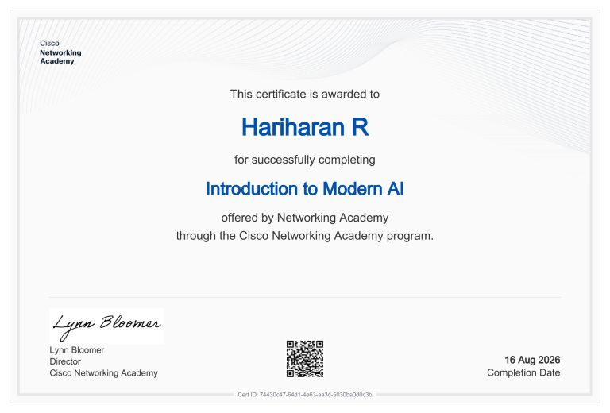
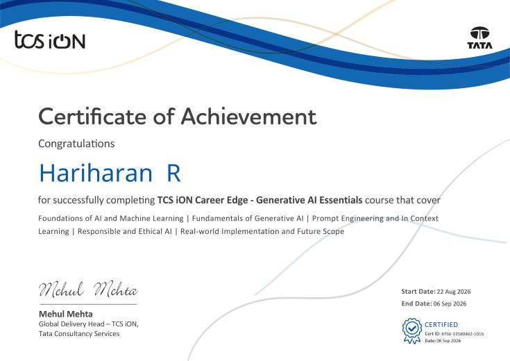
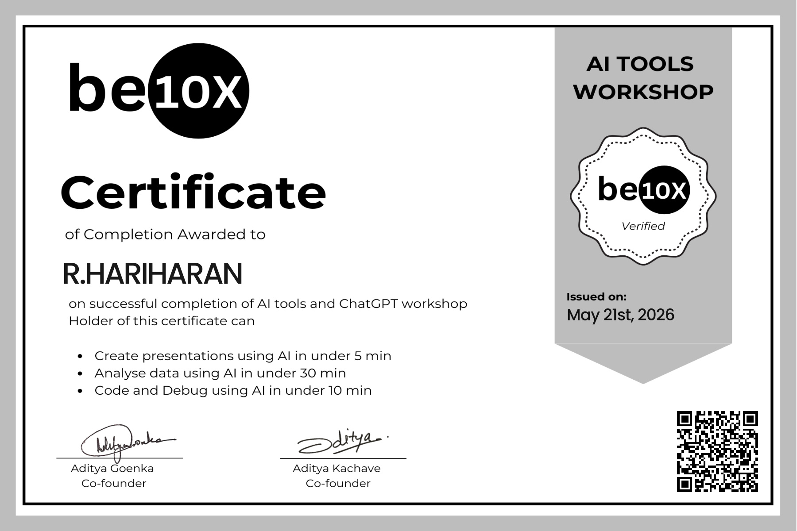

Completed AWS Technical Essentials training, building foundational knowledge of cloud computing, AWS
services, and modern cloud technologies.

Completed an introductory learning program focused on modern Artificial Intelligence. Expanded my
knowledge of AI technologies and strengthened my interest in exploring intelligent systems and emerging
technological innovations.

Explored the exciting world of Generative AI, including Machine Learning foundations, prompt engineering,
responsible AI practices, and real-world implementation. Enhanced my understanding of how AI can support
creativity, innovation, and intelligent problem-solving.
Completed AWS Technical Essentials training, building foundational knowledge of cloud computing, AWS
services, and modern cloud technologies.
Explored the fundamentals of Artificial Intelligence, its role in modern technology, the importance of
data, and its real-world business applications. Developed a basic understanding of AI ethics and how
intelligent technologies are shaping the future.
Successfully completed a one-month Web Developer Internship, gaining professional learning experience in
web development. This internship strengthened my interest in creating interactive, user-friendly, and
responsive web applications while developing my practical technical skills.

Participated in a Be10X AI workshop, exploring the fundamentals of Artificial Intelligence and its
practical applications. Gained insights into AI-powered tools, emerging technologies, and how AI can
support productivity, creativity, and problem-solving.
_page_1.jpg)

_page_1.jpg)